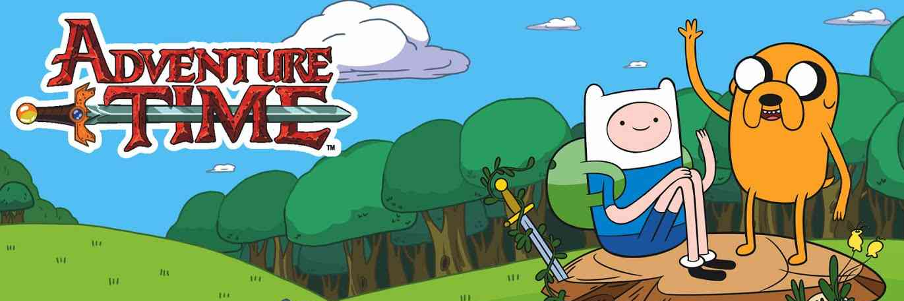

HORA DE AVENTURA
Hora de Aventura (Adventure Time en Estados Unidos, Hora de Aventuras en España y originalmente titulado Hora de Aventura con Finn y Jake) es una serie animada de televisión estadounidense creada por Pendleton Ward, producida por Cartoon Network.
Dulce reino de Ooo
Está hecho de dulce, azúcar y diferentes tipos de postres. Es el reino más popular y recurrente en la serie, así como también el reino con más tecnología y seguridad en Ooo, a pesar de estar en su mayoría hecho de dulces y de que todo lo que hay en él es comestible.

©Sitio web creado por ARCHER